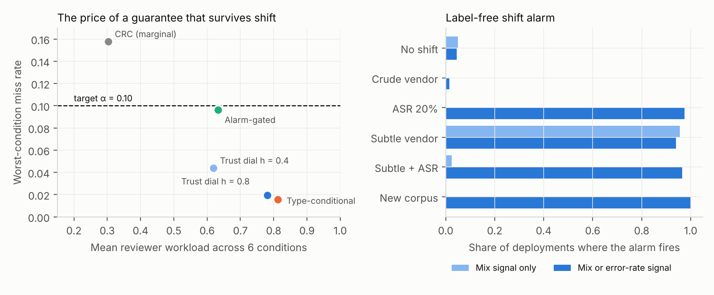
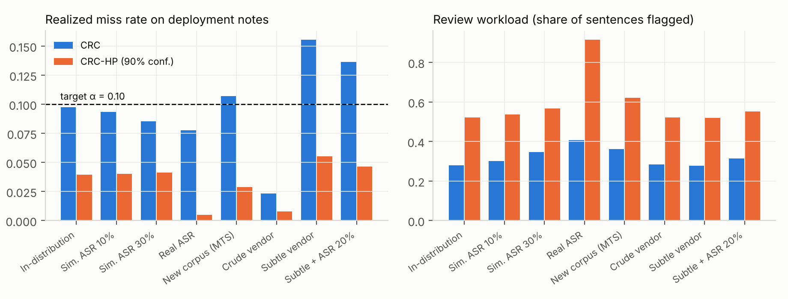
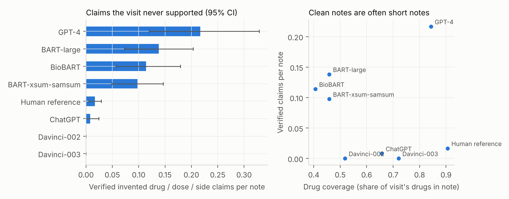

Trust That Survives Deployment: Shift-Robust Review Guarantees for AI Medical Scribes
AI scribes draft clinical notes from doctor–patient conversations, and a clinician is supposed to catch their mistakes. A conformal review gate can tell that clinician which sentences to check, with a guarantee on how many errors slip through. We show that the guarantee quietly breaks when a scribe's mix of errors changes, and we build one that doesn't, plus an alarm that says when you need it.
Abstract
Conformal risk control (CRC) can bound the expected share of errors a reviewer never sees, but the bound assumes deployment notes look like calibration notes. A scribe deployment breaks that: vendors update models, microphones change the transcript, hospitals differ. We build ScribeErr, 11,996 corrupted notes from ACI-Bench and MTS-Dialog with eleven transcript-aware error types, including grounded errors whose every word was spoken during the visit. We propose type-conditional review guarantees that bound misses within each error family, and therefore under any mixture of families, and a label-free shift alarm built on bias-corrected label-shift estimation. We also audit 1,200 real notes from ten note writers with verified transcript checks and a transcript-to-note certainty audit.
Findings
- A valid guarantee can hide a blind spot. In distribution, CRC meets its target (0.098 at α = 0.10) while missing 26.5% of grounded errors, mostly negation flips, and 0.4% of invented ones.
- Error-mix shift breaks the guarantee; transcript noise doesn't. A subtle vendor pushes the miss rate to 0.155. ASR noise keeps it valid but raises reviewer workload from 28% to 41% of sentences.
- Type-conditional guarantees survive any error mix. The miss rate never exceeded 0.016 across six conditions and 200 resplits. The price is set by the hardest family to detect: 80% workload, almost entirely due to negation flips.
- A label-free alarm says when to pay that price. It fires in 94–100% of harder shifts and 4.5% of normal deployments. Switching only when it fires keeps the miss rate ≤ 0.025 under every shift at 30% workload otherwise.
- Verified report card on real outputs. Deterministic transcript checks (93% adjudicated precision) find invented drugs, doses or sides in 15% of GPT-4 notes vs 1.7% of human notes; models stated hedged diagnoses as certain where human notes did not (pilot).

Review gates under shift
Mean miss rate / share of sentences sent to the reviewer, α = 0.10, 200 resplits. Red: target violated on average.
| Gate | No shift | Crude vendor | ASR 20% | Subtle vendor | Subtle + ASR | New corpus |
|---|---|---|---|---|---|---|
| CRC (marginal) | 0.100 / 28% | 0.023 / 28% | 0.091 / 32% | 0.158 / 27% | 0.138 / 31% | 0.109 / 36% |
| Trust dial, h = 0.4 | 0.030 / 60% | 0.005 / 60% | 0.031 / 62% | 0.044 / 59% | 0.035 / 62% | 0.020 / 69% |
| Type-conditional CRC | 0.015 / 80% | 0.000 / 80% | 0.015 / 81% | 0.016 / 80% | 0.015 / 81% | 0.002 / 84% |
| Alarm-gated | 0.096 / 30% | 0.023 / 29% | 0.017 / 80% | 0.025 / 78% | 0.019 / 80% | 0.002 / 84% |

Report card on real note writers
ACI-Bench released the notes nine systems wrote for the same 120 visits. Every hard-check flag on GPT-4 and human notes was adjudicated against the transcript.

Examples from GPT-4: a drug named when the patient said only "the medication you prescribed me"; "continue aspirin 81 mg and clopidogrel 75 mg" in a visit that never mentioned antiplatelets; "the high dose of atorvastatin" written as 80 mg; "Left knee is normal" in a right-knee visit.
Limitations
Errors in the guarantee experiments are injected, not natural. Adjudications were done against transcripts by the author with AI assistance; clinician labels are the next step, and a blinded labeling kit is included. Type-conditional guarantees rest on a label-shift assumption. Visits are role-played and the real outputs come from 2023-era models. The certainty audit rests on 23 hedged diagnoses.
Cite
@misc{nuthalapati2026scribecheck,
title = {Trust That Survives Deployment: Shift-Robust Review
Guarantees for AI Medical Scribes},
author = {Nuthalapati, Kishore},
year = {2026},
note = {Preprint},
url = {https://github.com/kishoren18-hue/scribecheck}
}